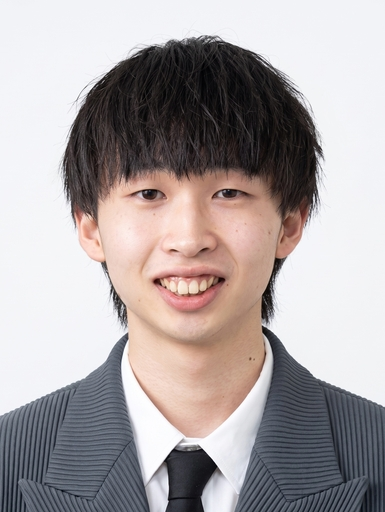

八木 颯斗
Hayato Yagi
慶應義塾大学大学院 理工学研究科
高道研究室 修士2年
Graduate School of Science and Technology, Keio University
Takamichi Lab, M.E. student (2nd year)
研究興味Research Interests
- 基盤モデルの内部機序分析Internal Mechanism Analysis of Foundation Models
- 音楽情報処理Music Information Processing

ニュースNews
-
2026.09
「音楽基盤モデルは音高情報を螺旋構造に埋め込むか？」が2026年度 山下記念研究賞を受賞しました。 「音楽基盤モデルは音高情報を螺旋構造に埋め込むか？」 received the IPSJ Yamashita SIG Research Award 2026.
-
2026.07
ISMIR 2026 に採択されました（採択率 31.2%）。 Accepted to ISMIR 2026 (acceptance rate 31.2%).
-
2026.06
Interspeech 2026 に採択されました。 Accepted to Interspeech 2026.
-
2026.06
音学シンポジウム2026にて優秀発表賞を受賞しました。 Received the Best Presentation Award at Ongaku Symposium 2026.
-
2025.08
第144回研究会 音楽情報科学研究会（MUS研究会）にてベストプレゼンテーション賞（Best Research 部門）を受賞しました。 Received the Best Presentation Award (Best Research) at the 144th IPSJ SIGMUS meeting.
経歴Education
-
2025.04 – 現在Present
慶應義塾大学大学院 理工学研究科 開放環境科学専攻School of Science for Open and Environmental Systems, Graduate School of Science and Technology, Keio University
修士課程 / 指導教員: 高道 慎之介M.E. / Advisor: Shinnosuke Takamichi
-
2021.04 – 2025.03
慶應義塾大学 理工学部 情報工学科Department of Information and Computer Science, Faculty of Science and Technology, Keio University
学士 / 指導教員: 斎藤 博昭B.E. / Advisor: Hiroaki Saito
受賞Awards
-
2026.09
2026年度 山下記念研究賞, 情報処理学会, 「音楽基盤モデルは音高情報を螺旋構造に埋め込むか？」 IPSJ Yamashita SIG Research Award 2026, 「音楽基盤モデルは音高情報を螺旋構造に埋め込むか？」
-
2026.06
優秀発表賞, 音学シンポジウム2026, 「音声基盤モデルは人間と同様の知覚的話者類似性を持つのか？」 Best Presentation Award, Ongaku Symposium 2026, 「音声基盤モデルは人間と同様の知覚的話者類似性を持つのか？」
-
2026.03
学生奨励賞（Best New Direction 部門）, 情報処理学会 音楽情報科学研究会（MUS研究会） 第145回研究会, 「音楽基盤モデルの表現形成における学習過程の解析手法の検討」（筆頭著者：佐藤りん） Student Encouragement Award (Best New Direction), 145th IPSJ SIGMUS meeting, 「音楽基盤モデルの表現形成における学習過程の解析手法の検討」 (first author: Rin Sato)
-
2025.08
ベストプレゼンテーション賞（Best Research 部門）, 第144回研究会 音楽情報科学研究会（MUS研究会）（夏のシンポジウム）, 「音楽基盤モデルは音高情報を螺旋構造に埋め込むか？」 Best Presentation Award (Best Research), 144th IPSJ SIGMUS meeting (Summer Symposium), 「音楽基盤モデルは音高情報を螺旋構造に埋め込むか？」
論文リストPublications
一致する論文がありません。No matching publications.
国際会議International Conferences
主著First Author
-
Hayato Yagi, Shinnosuke Takamichi, Rin Sato, Keitaro Tanaka, and Shigeo Morishima, “Do Music Foundation Models Embed Pitch in Helical Structure?,” Proc. ISMIR, Nov. 2026.
-
Minoru Kishi†, Hayato Yagi†, Shinnosuke Takamichi, and Yuki Saito, “Do speech foundation models perceive speaker similarity as humans do?,” Proc. Interspeech, Sep. 2026. †co-first author
共著Co-author
国内会議Domestic Conferences
主著First Author
-
八木 颯斗, 高道 慎之介, 佐藤 りん, 田中 啓太郎, 森島 繁生, 「音楽基盤モデルにおけるモデル構成と内在音高螺旋の関係」, 情報処理学会 音楽情報科学研究会, Aug. 2026. Hayato Yagi, Shinnosuke Takamichi, Rin Sato, Keitaro Tanaka, and Shigeo Morishima, 「音楽基盤モデルにおけるモデル構成と内在音高螺旋の関係」, IPSJ SIGMUS, Aug. 2026.
-
八木 颯斗, 高道 慎之介, 佐藤 りん, 田中 啓太郎, 森島 繁生, 「音楽基盤モデルは音高情報を螺旋構造に埋め込む」, 言語処理学会 若手支援事業, Aug. 2026. Hayato Yagi, Shinnosuke Takamichi, Rin Sato, Keitaro Tanaka, and Shigeo Morishima, 「音楽基盤モデルは音高情報を螺旋構造に埋め込む」, ANLP Young Researcher Support Program (YANS), Aug. 2026.
-
岸 秀†, 八木 颯斗†, 高道 慎之介, 齋藤 佑樹, 「音声基盤モデルは人間と同様の知覚的話者類似性を持つのか？」, 情報処理学会 音声言語処理研究会, Jun. 2026. †共同第一著者 優秀発表賞 Minoru Kishi†, Hayato Yagi†, Shinnosuke Takamichi, and Yuki Saito, 「音声基盤モデルは人間と同様の知覚的話者類似性を持つのか？」, IPSJ SIG-SLP, Jun. 2026. †co-first author Best Presentation Award
-
八木 颯斗, 稲垣 賢斗, 高島 悠樹, 安藤 厚志, 高道 慎之介, 「Full-duplex音声対話モデルにおける性別表現のプロービング」, 情報処理学会 音声言語処理研究会, Mar. 2026. Hayato Yagi, Kento Inagaki, Yuki Takashima, Atsushi Ando, and Shinnosuke Takamichi, 「Full-duplex音声対話モデルにおける性別表現のプロービング」, IPSJ SIG-SLP, Mar. 2026.
-
八木 颯斗, 高道 慎之介, 佐藤 りん, 田中 啓太郎, 森島 繁生, 「音楽基盤モデルにおける音響特徴と内在音高螺旋の関係」, 情報処理学会 音楽情報科学研究会, Mar. 2026. Hayato Yagi, Shinnosuke Takamichi, Rin Sato, Keitaro Tanaka, and Shigeo Morishima, 「音楽基盤モデルにおける音響特徴と内在音高螺旋の関係」, IPSJ SIGMUS, Mar. 2026.
-
八木 颯斗, 高道 慎之介, 「音楽基盤モデルは音高情報を螺旋構造に埋め込むか？」, 情報処理学会 音楽情報科学研究会, Aug. 2025. ベストプレゼンテーション賞（Best Research 部門），2026年度 山下記念研究賞 Hayato Yagi and Shinnosuke Takamichi, 「音楽基盤モデルは音高情報を螺旋構造に埋め込むか？」, IPSJ SIGMUS, Aug. 2025. Best Presentation Award (Best Research), IPSJ Yamashita SIG Research Award 2026
-
八木 颯斗, 斎藤 博昭, 「MIDI-likeトークンを用いたseq2seqモデルによる鼻歌自動採譜」, 情報処理学会 音楽情報科学研究会, Jun. 2025. Hayato Yagi and Hiroaki Saito, 「MIDI-likeトークンを用いたseq2seqモデルによる鼻歌自動採譜」, IPSJ SIGMUS, Jun. 2025.
共著Co-author
-
千頭和 翔梧, 岸 秀, 八木 颯斗, 佐藤 りん, 高道 慎之介, 田中 啓太郎, 森島 繁生, 「音楽基盤モデルは単音から和音の埋め込みをどのように演算するか？」, 情報処理学会 音楽情報科学研究会, Aug. 2026. Shogo Chizuwa, Minoru Kishi, Hayato Yagi, Rin Sato, Shinnosuke Takamichi, Keitaro Tanaka, and Shigeo Morishima, 「音楽基盤モデルは単音から和音の埋め込みをどのように演算するか？」, IPSJ SIGMUS, Aug. 2026.
-
佐藤 りん, 田中 啓太郎, 八木 颯斗, 高道 慎之介, 森島 繁生, 「音楽基盤モデルの学習過程における内在音高螺旋の可視化」, 情報処理学会 音楽情報科学研究会, Jun. 2026. Rin Sato, Keitaro Tanaka, Hayato Yagi, Shinnosuke Takamichi, and Shigeo Morishima, 「音楽基盤モデルの学習過程における内在音高螺旋の可視化」, IPSJ SIGMUS, Jun. 2026.
-
佐藤 りん, 田中 啓太郎, 八木 颯斗, 高道 慎之介, 森島 繁生, 「音楽基盤モデルの表現形成における学習過程の解析手法の検討」, 情報処理学会 音楽情報科学研究会, Mar. 2026. Rin Sato, Keitaro Tanaka, Hayato Yagi, Shinnosuke Takamichi, and Shigeo Morishima, 「音楽基盤モデルの表現形成における学習過程の解析手法の検討」, IPSJ SIGMUS, Mar. 2026.
学生奨励賞（Best New Direction 部門）Student Encouragement Award (Best New Direction)
インターンシップInternship
-
2025.08 – 2025.09
NTT R&D 人間情報研究所NTT R&D, Human Informatics Laboratories
-
2024.03 – 2025.03
株式会社ナガセNagase Co., Ltd.
東進模試採点運営IT部門 / バックエンドエンジニアBackend Engineer, Toshin Mock Exam Scoring Operations IT
連絡先Contact
- Email hayatobuti523[at]keio.jp
- GitHub haya0005
- X @yagiyagi__3
- Lab Takamichi Lab.